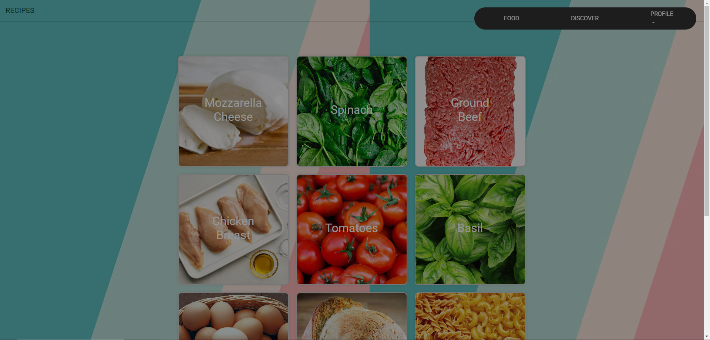
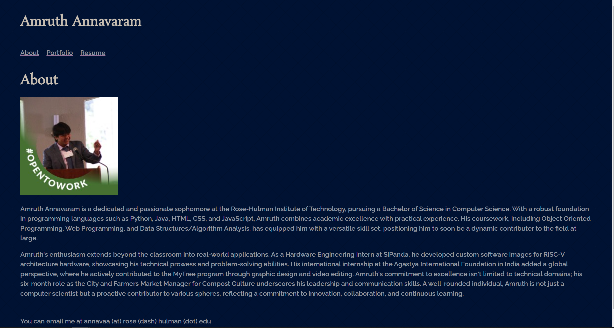

Portfolio
Below are my most notable projects (and my ones in progress)!
-
Web Programming Final Project
For my web programming final, I designed a website that reccomends foods based on recipes. I worked with HTML, JavaScript, and CSS to design this website.
Web Programming Personal Portofolio
I am working on a personal portfolio for my web programming class. It utilizes HTML, CSS, and JavaScript and you are on it right now!
Object Oriented Programming Final

My object oriented programming final was to create a Jetpack Joyride like video game using object oriented programming principles in Java. In this porject there were over 10 classes that used inheritance and other prinicples to interact. I earned an A on this project.
Yocto Image Project

This project for SiPanda was to create a simple guide on creating a new Yocto image. I used Ubuntu and its terminal to generate the guide which can be found on GitHub at https://github.com/AmruthAnnavaram/Unmatched-Yocto-Image.